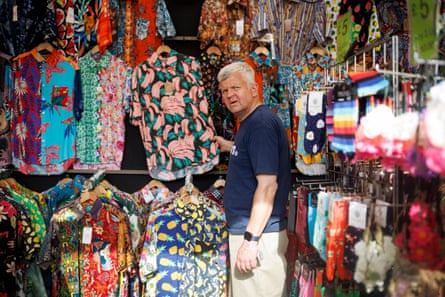
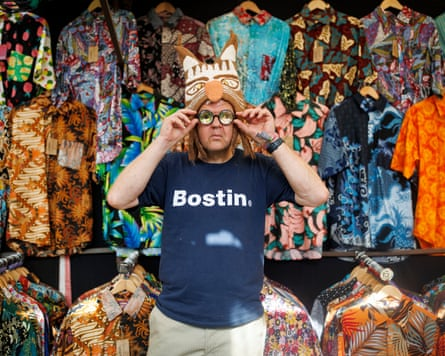
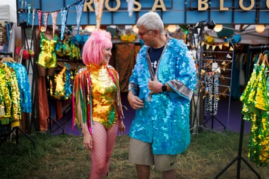
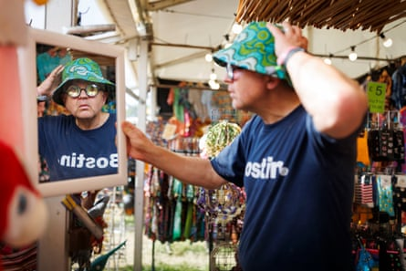
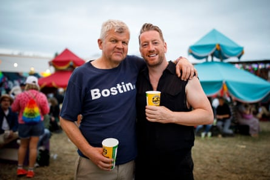
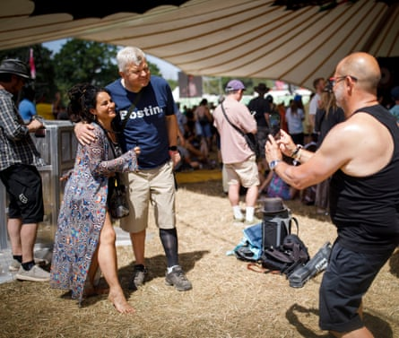
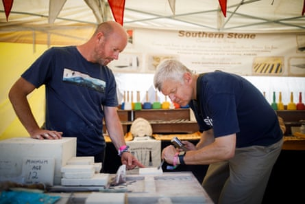

I thought I would never go to Glastonbury, and that was fine with me. Six years ago, I wrote about how it was my idea of hell , my event 101. Ever since then, for reasons known only to themselves, my Guardian handlers have been badgering me to come. They wore me down. They got me to Glastonbury.
What was my problem? Well, while I knew I would love a lot of the music, there are some creature comforts I won’t be without. Nothing fancy – my personal hygiene bar is rather low; going without a shower for a few days holds no fear for me. All I insist upon is a clean bog and a bed on which to sleep, neither of which are easy to find at Worthy Farm.
The odd thing with Glastonbury is that even those who love it will also tell you terrible things about it. Murder when it’s hot. Misery when it’s wet. Chaotic, confusing, can’t get near the stage. Flip-flops? You must be mad – your feet will be covered in filth! The toilets? God, they’re – retch – awful. But you must go, they would all conclude. Must I? Apparently so.
As the weekend neared, my anxiety ratcheted up. In one stress dream, I was bundled, protesting, on stage to introduce Self Esteem . Weird. In another, I was up there in a spelling competition trying to spell arboretum. Weirder still.
Creature of habit … Self Esteem at this year’s festival.Photograph: Alicia Canter/The Guardian
On the radio, I sought listeners’ advice for a Glastonbury virgin. The first text in read: “Baby wipes, baby wipes and baby wipes.” I bought some baby wipes. Someone else said: “Make sure you get your drugs tested at the back-of-house testing sites.” I’ll be sure to do that – and if my atorvastatin turns out to be knock-off, I’ll be speaking to my pharmacist in the strongest terms. Rob, 49, got in touch to say it would be his first time too, and he was more nervous than excited.
My daughters, both of whom would be there, said things like: “Don’t do anything strange,” and: “Don’t do anything embarrassing.” They both asked, sweetly enough, if I had any friends going, because they didn’t want anyone saying: “We just saw your dad walking around on his own.” Parenting is about the journey from being the carer to being the cared for. This has been the weekend my children and I crossed that Rubicon. Are you OK? Have you eaten? Did you bring your sun cream? Toilet paper? Surely it should be me asking these questions, not struggling to answer them.
To dodge the traffic, I decided to travel on my motorbike. That way, if it was really awful, I could attempt an exit à la Steve McQueen in The Great Escape. It turned out to be a good decision: I swept right up to the gate, trundled into the secure bike compound and parked alongside the incredibly few motorbikes in there. Bingo. It’s the way to go. So there I was, a Glastonbury first-timer not even into the festival proper, already offering dad advice on how to do it better.
F ifty-eight is decidedly late to lose your virginity at anything. This weekend felt like going to a Doctor Who convention without having seen an episode of Doctor Who, or taking up skiing having never trodden on snow. Last summer, I went on a cruise for the first time and it was the same then – everyone apart from me seemed to know the ropes. All at sea, then and now.
At first, I always seemed to be walking in the opposite direction to everyone else. On one occasion, a river of people marching in the same direction blocked my way. Ill-advisedly, I tried to dance across the general flow. There was an obvious lesson: chill out, Grandad, and go with that flow.
It takes all sorts … Adrian looks for a party outfit.Photograph: Alicia Canter/The Guardian
I’m not a grandfather, by the way, but I felt like one there. While it was not exactly a youthful crowd, 95% of them appeared to be younger than me. Anxiously, I scanned around for someone, anyone, to make me feel young again, or at least not so old. There were the odd one or two, but not many. “Shed Seven,” someone said to me. “You should have been at Shed Seven. Everyone there was ancient.” Damn, that would have been a good place to start.
Instead, I broke my duck at Alanis Morissette . “What’s Alanis Morissette?” asked my younger daughter. Fair question, given she wasn’t even thought of when Jagged Little Pill came out. So how come I seemed to be the oldest one there, too? I certainly felt more than seven years the senior of Alanis, who looked no different on Friday than she did back then.
Going with the flow …Photograph: Alicia Canter/The Guardian
I picked up a particular vibe about the Glastonbury crowd. It was in the look on everyone’s faces, the way they walked, the very set of their jaws. I would characterise it as a mix of pleasure and pain, excitement and exhaustion. By the time I turned up, everyone already looked a bit knackered. Happy, no doubt, but knackered. And this was only Friday afternoon. Blimey. What is this, a funfest or an endurance test? “Both!” said everyone to whom I posed this question. As one young woman said to me, with feeling: “The highs are high, but the lows are very low.” Right, I get it now: no pain, no gain. I can work with that, I thought. Once I understood what this Glastonbury caper was all about, I could engage.
Pain was certainly something I experienced listening to Busta Rhymes . Without wishing to sound as old as I felt, his act seemed to involve a lot of shouting. Go with the flow, I reminded myself. I put my arms in the air when commanded by the great man to do so. I even endeavoured to move them backwards and forwards in time with everyone else. God loves a trier.
Try before you buy …Photograph: Alicia Canter/The Guardian
I got a text from a friend, Max, a Glastonbury old hand who turned out to be there busting some rhymes, too. My daughter, seeing a chance to get shot of me, led the way to him. Picking your way through a crowd is a skill this festival novice lacks. She yelled at me to keep up with her. This was easier for her to say than for me to do: she is quite small, with small feet, whereas I’m quite big, with correspondingly big feet. It is tricky to make brisk progress without knocking a drink – or the drinker – over, or causing lasting damage to fingers or toes. This must happen all the time, with all sorts of pushing, shoving and bad blood ensuing.
Buckets of character …Photograph: Alicia Canter/The Guardian
I asked Max how often fights broke out. “At Glastonbury? Never,” he said. And this, astonishingly, seems to be the case. All this chaos, intoxicants of all kinds and general exuberance, yet no trouble at all. Miraculous. OK, there have been political blows exchanged, but that is different. In terms of physical skirmishing, there will have been more nonsense on your high street this weekend than on the whole Glastonbury site.
Max suggested we go to see Self Esteem on the Park stage. She had managed to start without me introducing her. And she was brilliant, really properly brilliant. With the help of nothing more than some warmish lager, my mate Max and this gifted woman from Rotherham, I felt a perfect high. I even, incredibly, bumped into Rob, who had texted in to my radio show that it was his first time. We agreed it was all very nice. Yes, this was great. But, as I had been warned, every high is followed by a low.
Small world … with Rob, who had texted Adrian’s radio show about visiting Glastonbury for the first time.Photograph: Alicia Canter/The Guardian
I had a look at Loyle Carner , who was just wrapping up on the Other stage, then called it a day. It was only then, back in my tent, that I realised I had got something very wrong. Two years ago, Lana Del Rey’s microphone was cut because she overran her headline slot. From this, I had drawn the conclusion that the organisers took their curfews and noise abatement responsibilities very seriously. Quite right, too. I assumed everyone else would be turning in now, too. I honestly thought my sleep would be disturbed by nothing louder than the sound of fellow campers snoring or, at worst, having sex.
How very wrong I was. The snoring or sex would have needed to have been loud indeed to break the infernal racket that banged on for hours, all over the site. Why did they cut poor Lana’s mic if this aural pandemonium goes on all night anyway? Sleep came only as dawn approached, and fitfully. Truly, the God that is Glastonbury giveth and taketh away.
I rose early to commence the search for some highs to make up for the night’s bottomless lows. For reasons of vanity, the previous evening I had dispensed with the compression sock I am always supposed to wear on my left leg. Now, I was paying a price for that, so, odd though it looks when I’m in shorts, back on it went. I was too tired to be anything other than my authentic self.
Make some noise … Busta Rhymes(right)with Spliff Star on the Other stage.Photograph: Jonny Weeks/The Guardian
I chanced upon the Glade stage, where a modest but appreciative crowd were swaying in a relaxed fashion to the sound of – and I quote from the programme – Channel One’s Mikey Dread bringing roots, rock and reggae vibrations with MC’s vinyl and dubplates. Even though I’m familiar with more than half of those words, this didn’t mean a lot to me. Still, what’s not to like about a slow, heavy reggae beat? Among the swayers there were a good few blokes my age – at last! – shifting their weight from foot to foot. I stood there a while, enjoying it, and, almost despite myself, found my weight tentatively shifting from foot to foot.
Then, two very odd things happened. First, the prodigious, dungeon-deep bass slightly changed pitch. I was astonished, not to say alarmed, to find that this – and I’m sorry not to spare you this detail – made my testicles throb in time with the music. I couldn’t work out if the other blokes were feeling the same thing. Perhaps Mikey Dread had just found my frequency. Look, I don’t mind a bit of something different late at night, but at lunchtime on a sunny Saturday, I wasn’t ready. Gingerly, I started to edge my way out, only for something even odder to happen.
Cheese! Adrian meets fans at the Glade.Photograph: Alicia Canter/The Guardian
I was stopped by a petite woman, around my age, who shouted something in my ear that sounded like “DVT”. I thought this was some reference to my cursed compression sock, but it turned out she had said “DMT”. Specifically: “You need to smoke some DMT,” which presumably is what was emanating from the thing she was waving under my nose. I thanked her very politely, but refused. It became clear that this was an extremely good decision. “The effects of DMT take hold almost immediately when smoked. Users may feel like they are instantly transported to another universe,” I read. Crikey. “Within five minutes … users may experience increased blood pressure, rapid heartbeat and dilated pupils.”
Relieved but shaken, I went off to the Healing Fields. There, a nice chap from Dorset calmed me with instructions on how to carve a heart into a square of Maltese limestone. All this before lunch. There really is something for everyone at that place.
Something for everyone … Adrian gets whittling.Photograph: Alicia Canter/The Guardian
The sun got hotter, the crowds thickened and still, to my increasing admiration, not a temper frayed. The sheer good nature of everyone in attendance started to feel almost absurd. My daughter told me to meet her at the Other stage, where she said I would enjoy Beabadoobee – no, me neither. But she was right, I did. It was all getting nicer and nicer.
Word reached me of fire and brimstone elsewhere ahead of the Kneecap gig . It came across like news from a distant planet where they did things differently. I neither saw, heard nor felt anything along those lines anywhere I ventured all weekend.
By the time Pulp took to the Pyramid stage , the peace-and-love control knobs were turned up to 11. Sensing the softening of my heart, my colleagues took the opportunity to force me into silly hats and whatnot. Everyone sang along. Everyone danced. Even me, nearly. The Red Arrows flew over. What next? Santa? To my consternation, I got a bit tearful. I give in. Glastonbury is a good thing. Anything that makes the world feel this nice has to be a seriously good thing.
To anyone who has been scathing about Glastonbury without having attended – as was the case with me – I humbly suggest your cynicism would not survive the reality of being there.